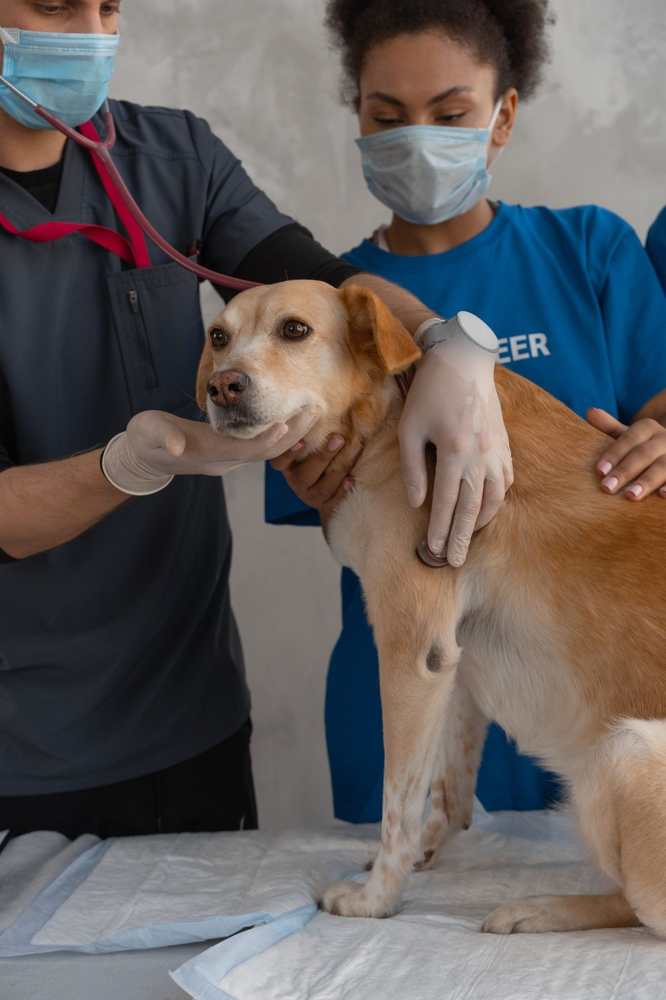

In the exam room, in stock photos


Mobile, Alabama
Ark Animal Clinic is a veterinary clinic and rehabilitation center serving Mobile since June 2010. Call to ask about wellness exams, digital radiography, boarding, dental care, vaccines, spay and neuter, heartworm and flea prevention, microchipping, or physical therapy.

Ark Animal Clinic is a veterinary clinic and rehabilitation center serving Mobile since June 2010. Its services include wellness exams, digital radiography, boarding, dental care, vaccines, spay and neuter, heartworm and flea prevention, microchipping, and physical therapy. The own site carries service blurbs plus testimonials with phone-only contact and has no prices or online booking, so call with questions.
3625 Springhill Memorial Dr S, Mobile, AL 36608
Monday to Friday 7:00 AM to 5:30 PM; Saturday 8:00 AM to noon; closed Sunday